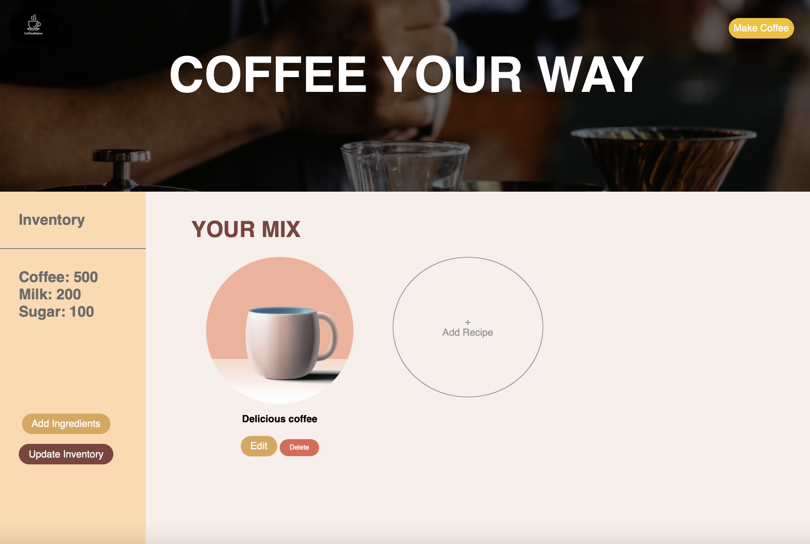
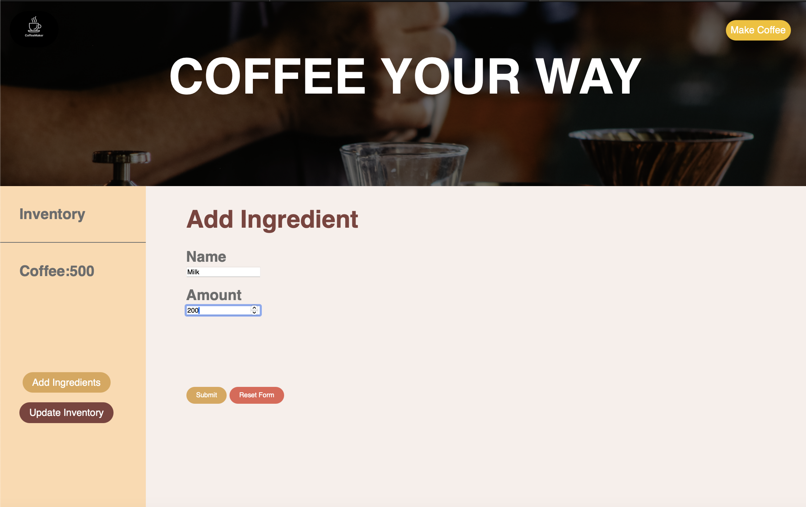
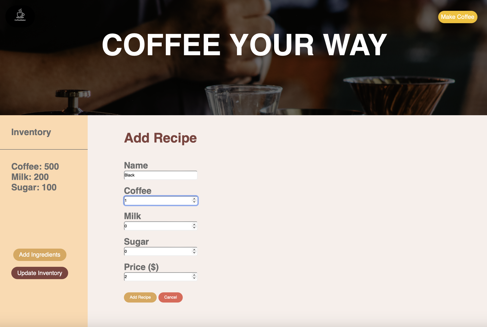

Coffeemaker is a full stack Java implementation of a coffee ordering website. The front end provides an elegant HTML interface, allowing users to place coffee orders, manage recipes, and update ingredients and inventory.
  This project utilizes Java for the back-end implementation, HTML for the user interface, and Rest API, and SQL query's to connect them. Additional technologies may include databases for storage and possibly JavaScript or related technologies for interactive front-end elements.
The project works as intended for its core functionalities. Challenges include ensuring seamless integration between the front-end and back-end components, managing database interactions, and maintaining a smooth user experience.
Future plans involve refining the user interface for a more intuitive experience, modifuying the backend to use a hashmap for the implementation of the inventory, and implementing additional features such as having multiple user accounts and supporting multiple connections at once.
Explore the code and more details on the CoffeeMaker GitHub Repository.